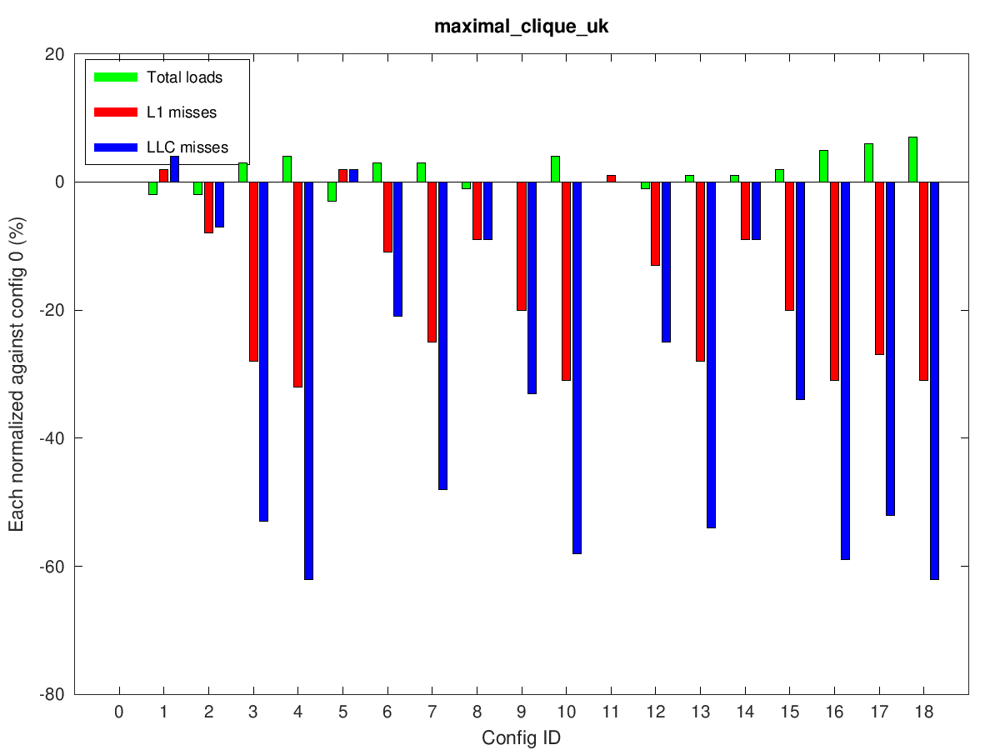
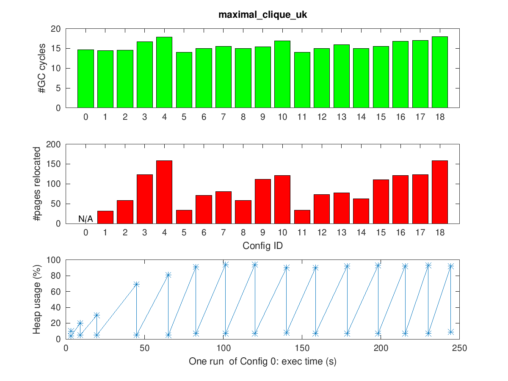
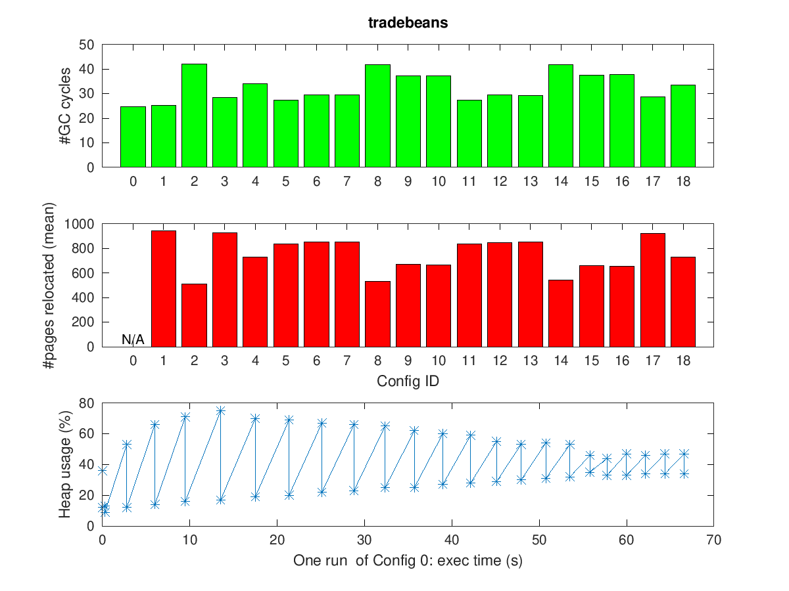

Benchmark Results for HCSGC
Table of Contents
The Tables in this file are created by the benchmark scripts.
make testproduces plots for the left-hand-side of Tables 1, 2 and 3.
make test_fullproduces plots for the left-hand-side of Tables 1–9.The full plots are generated by
make bench, which takes weeks to run.The left plots in the tables below will be empty initially, and only our submitted plots be shown.
1 IMPORTANT NOTES FOR EVALUATORS
HCSGC requires multiple cores to run efficiently (as demonstrated below). If you constrain the CPU resources of the virtual machine in which you run HCSGC you are likely to see mostly slowdowns, and few performance improvements (cf. Figure 6 in the paper).
Furthermore, running perf inside a virtual machine is typically
not supported (depending on your virtualisation software). Unless
you install HCSGC manually, you are not likely to get any cache
metrics.
For all the following benchmarks (synthetic suite, JGraphT and
DaCapo), our plots show results from running a machine with 2
cores (2 hyper-threads/core). If you try to reproduce this results
on a more powerful machine (say >10 cores), you may observe that
for config 0, more GC cycles are triggered and for config 1-18,
"Total loads" reported by perf is reduced, which is in contrast
to the increased "Total loads" as shown in our plots. The
phenomenon is due to Proactive GC in ZGC, which we elaborate
below.
In ZGC, a GC cycle could be triggered for various reasons (high allocation rate, high usage, proactive, etc). A Proactive ZGC cycle is started if it's deemed cheap enough, determined by the duration (elapsed wall-clock time) of a GC cycle. The duration is proportional to the amount of work performed in a GC cycle, and inversely proportional to the number of GC threads (controlled by ConcGCThreads, which is set based on the number of cores on the machine).
With our HCSGC extension, a GC cycle actually performs more work, resulting into longer GC cycle. Therefore, the number of Proactive GCs becomes less frequent. The number of "Total loads" is proportional to the amount of work done in the process (mutator thread + GC threads), so the more GC cycles there are, the more recorded "Total loads" is, assuming other factors stay the same. Therefore, the reduction in "Total loads" in config 1-18 is because of the large number of "Total loads" in config 0, which is caused by the large number of Proactive GC cycles.
2 Introduction to HCSGC and How to Evaluate
The evaluation of this paper is concerned with showing that HCSGC
can speed-up benchmarks in relation to the baseline – an
unmodified OpenJDK using the ZGC collector – which is
Configuration 0. We record cache performance using perf along
with the number of times GC was triggered (GC cycles) and the
number of pages relocated to explain our results. As detailed
below, we test 18 different configurations, in addition to the
baseline, using various flags and settings in HCSGC.
One of the key ideas of HCSGC is to use applications threads to move objects around in memory on access. During relocation in a GC cycle, all pages which will be relocated are flagged accordingly, which forces the first load of a pointer going into such a page to trigger code that copies the objects off the page and into a local allocation buffer. Thus, if an application thread accesses 10 objects scattered across such pages, these objects will subsequently be copied and placed in consecutive space on the thread's allocation buffer. This copying naturally incurs some extra overhead on the application threads, but if the application exhibits temporal and spatial locality – these extra costs will be made up for by the increased performance of subsequent accesses.
When Hotness is on (configurations 5-18), HCSGC records whether an object was touched by the application or not in the last GC cycle. This comes with a small overhead (discussed further below), but allows the GC threads to place objects which have not been touched (aka cold) and objects that have (aka hot) in different places in the memory so that hot objects "stay together". This favours spatial locality and is turned on by the ColdPage setting (on in configurations 11-18).
Tracking hotness also allows us to do a better selection of what pages are relocated. In ZGC, relocation takes place to collect garbage, and so what pages to relocate is based only on the number of live bytes. In HCSGC, relocation also allows us to "curate the heap", meaning segregating hot and cold objects, and forcing application threads to place objects on those pages that they access in access order which favours locality and prefetching behaviour. To this end, the ColdConfidence setting allows us to assign a weight to cold bytes. If this weight is low, a page in memory with only few hot bytes will be selected for relocation. This allows us to "excavate" hot objects buried among long-lived, cold objects on a densely populated page so that we may improve their placement. Different configurations use different ColdConfidence as detailed by the table below.
When RelocateAllSmallPages is on (configurations 3, 4, 17, and 18) – GC will relocate all pages, regardless of hotness or liveness. This is crude but effective, especially as we do not need to pay a cost to track hotness. On a machine with spare cores, the cost of the additional copying is taken by GC threads and thus efficiently hidden from the application.
Finally, when LazyRelocate is on (configurations 2, 4, 8-10, 14-16, 18), we shift the timing of relocation in a GC cycle in a way that effectively delays GC threads. This causes garbage objects to stay floating longer before they are reclaimed, but also gives applications' threads longer time to relocate the objects they access without competing with GC threads.
Notably, HCSGC is not expected to produce speed-ups across the board. Programs which have only short-lived objects or no stable access paths will not enjoy any performance improvements.
3 Configurations
In the plots, Configuration 0 is an unmodified OpenJDK using ZGC, built from the same commit on which we authored HCSGC. All other configurations are HCSGC with various flags on or off or at different values. The table below overviews the 19 different configurations. 0 means a flag was turned off, and 1 means a flag was turned on. As ColdConfidence, we pick 0, 0.5 and 1.0. Configuration 5 turns on hotness tracking but does not use it. (ColdConfidence assigns a weight to cold bytes that allows us to better select pages for relocation during garbage collection. A ColdConfidence of 0 means \(N\) cold bytes count as \(N\) live bytes. A ColdConfidence of 1 means that \(N\) cold bytes count as 0 live bytes.)
| Knobs \ Configurations | 0 | 1 | 2 | 3 | 4 | 5 | 6 | 7 | 8 | 9 | 10 | 11 | 12 | 13 | 14 | 15 | 16 | 17 | 18 |
|---|---|---|---|---|---|---|---|---|---|---|---|---|---|---|---|---|---|---|---|
| Hotness | n/a | 0 | 0 | 0 | 0 | 1 | 1 | 1 | 1 | 1 | 1 | 1 | 1 | 1 | 1 | 1 | 1 | 1 | 1 |
| ColdPage | n/a | 0 | 0 | 0 | 0 | 0 | 0 | 0 | 0 | 0 | 0 | 1 | 1 | 1 | 1 | 1 | 1 | 1 | 1 |
| ColdConfidence | n/a | 0 | 0 | 0 | 0 | 0 | 0.5 | 1.0 | 0 | 0.5 | 1.0 | 0 | 0.5 | 1.0 | 0 | 0.5 | 1.0 | 0 | 0 |
| RelocateAllSmallPages | n/a | 0 | 0 | 1 | 1 | 0 | 0 | 0 | 0 | 0 | 0 | 0 | 0 | 0 | 0 | 0 | 0 | 1 | 1 |
| LazyRelocate | n/a | 0 | 1 | 0 | 1 | 0 | 0 | 0 | 1 | 1 | 1 | 0 | 0 | 0 | 1 | 1 | 1 | 0 | 1 |
4 Sanity Check Benchmark of §4.4
The synthetic benchmark is meant to illustrate the behaviour of HCSGC and its various tuning knobs. The synthetic benchmark creates an array of objects which is then accesses in a randomized order multiple times, each time in the same order. The results show that HCSGC is indeed able to move the hot objects in the stable access order closer so that subsequent accesses are faster.
In the benchmark, we create an array of \(2\times 10^6\) elements, each pointing to a 32-byte object (including VM metadata). Here is the main body of the benchmark in pseudo-Java:
for (int i = 0; i < 200; ++i) {
rand = new Random(0); // use same seed each loop
for (int j = 0; j < 800 * 1000; ++j) {
index = rand.nextInt(...) // preferably another cache line
f(index); // access element in index
++ops;
if (ops % 10 == 0) { /* allocate garbage to trigger GC */ }
}
}
4.1 §4.4 and Figure 4
The execution time under each configuration is shown in Table 1. This artificially contrived benchmark has clear hot–cold segregation and a recurring stable access pattern. During our evaluation, we observed the accumulative effect of various tuning knobs, corresponding to the different tiers of performance above.
In our evaluation, we saw the largest improvement for Configurations 4, 10, 16, and 18, which have both large EC1 (due to relocating all pages or 100% cold confidence) and lazy relocation enabled. The second largest improvement were seen in Configurations 3 and 17, with large EC due to relocating all pages. Next, we also observed some improvement for Configurations 7 and 13 because they relocate many pages (which has the side-effect of making mutators relocate hot objects) due to 100% cold confidence. Finally, we saw no improvement for Configurations 2, 5, 8, 11, and 14 show no improvement at all.
 |
Table 2 shows cache metrics. In our evaluation, Configurations 3, 4, 7, 10, 13, 16, 17, and 18 exhibit large reduction in L1/LLC misses. We observed large increases of total loads for Configurations 3–18 that were mostly served by cache L1/LLC (small L1/LLC misses) so they were still a net gain. In our evaluation, configurations showing large cache miss reduction were consistent with the corresponding improved performance in Table 1, demonstrating that HCSGC is effective in improving locality.
 |
Table 3 explores the nature of the extra work performed by HCSGC. We compare the number of GC cycles and the amount of relocation of the various configurations with out ZGC baseline. In our evaluation, it was clear from the plots that the extra loads were due to extra GC cycles and/or enlarged EC – e.g. those configurations that had more loads had increased number of GC cycles and also (typically but not always) more pages relocated during GC.
 |
If you have run
make test, your data ends here.
4.2 Adapting to phase changes (In paper, this is Figure 5)
The design of HCSGC should adapt naturally to phase changes that alter what objects are accessed by an application, and in what order. To test this, we extended the single-phase code (shown in pseudo-Java above in this document) to simulate going through multiple phases each with its own access pattern. As shown below, we use three phases, where each phase has its own seed so that within each phase, the access order is stable, but different across the phases.
for (int phase = 0; phase < 3; ++phase) {
for (int i = 0; i < 200; ++i) {
rand = new Random(phase); // not a constant anymore
... // same as before
}
}
When running this modified benchmark using HCSGC, the performance results where not significantly different from the results of single-phase version (Tables 1-3 above). This showed that HCSGC can indeed react to phase changes.
The result of running the modified benchmark in the artefact is found below in Table 4, Table 5, and Table 6.
 |
 |
 |
4.3 High Overhead of RelocateAllSmallPages (In paper, this is Figure 6)
HCSGC configurations which use the -XX:+RelocateAllSmallPages
(i.e., flag is on) performs very well on a machine that is not
fully saturated. This is because all the extra time taken to
relocate pages is "hidden" from mutators since relocation happens
in GC threads and collection is concurrent.
To demonstrate this, we restrict HCSGC to run on a single core (using taskset) which forces the additional GC work to be shared by the same cores that serve the mutators. In our evaluation, the result was a considerable slow down of configurations that previously saw 30+% speed-up; they saw a slow-down of 30+% instead. Note that if you are running HCSGC in a virtual machine, you will always get this behaviour unless you allow the virtual machine to use more than one of your cores.
 |

{kind=link}
{kind=link}
{kind=link}
{kind=link}
{kind=link}
{kind=link}
{kind=link}
{kind=link}
 |
{kind=link}
If you have run
make test_full, your data ends here.
5 JGraphT Benchmark of §4.5
We run two benchmarks from from the JGraphT library: maximal clique (MC) (BronKerboschCliqueFinder), and (weakly) connected components (CC)} (BiconnectivityInspector).
We use the graph datasets uk-2007-05@100000 and enwiki-2018.
We implement a minimal driver which does nothing more than call
the APIs from LAW to load the graph, insert all nodes to a new
graph from JGraphT, and calls a method from JGraphT on the graph
where almost all processing time is spent.
Processing the whole graph takes several days so we only use part of the graph as the inputs (both in the paper and in the artefact).
5.1 Connected Components
We did not observe much garbage created at all using the connected components (CC), for either uk or enwiki: the number of GC cycles we saw were small, and most of them occured within the first 5 seconds of VM start-up. This is visible in Table 12 and Table 15.
However, we also saw that that time was enough to reorganise the objects created in an order facilitating fast mutator access, as reflected by low cache missed (uk, enwiki) and reduced execution time (uk, enwiki) .
 |
{kind=link}
 |
{kind=link}
 |
{kind=link}
 |
{kind=link}
 |
{kind=link}
 |
{kind=link}
5.2 Bron-kerbosch Maximal Clique
For maximal clique (MC) we saw considerable additional allocation happening both both uk and enwiki, and we observed periodic GC cycles. As with connected components, we observed reduced cache misses (uk, enwiki) and faster execution time (uk, enwiki).
We observed a large difference between Configuration 2 and Configuration 3, which means that many hot objects reside on pages that are well populated so that those pages are never added to EC according to original ZGC criteria. This lead to a clear staircase pattern for configurations with increasing ColdConfidence value (Configs 5–7, 8–10, 11–13, and 14–16). This demonstrates that HCSGC is able to excavate hot objects buried among cold objects using this knob.
 |
{kind=link}
 |
 |
{kind=link}
 |
 |
{kind=link}
 |
{kind=link}
 |
{kind=link}
 |
{kind=link}
6 DaCapo Benchmark Suite of §4.6
We looked at two benchmarks from the DaCapo suite of Java benchmarks (release version 9.12-bach-MR1). Since HCSGC takes advantage of recurring and stable access patterns, it is not intended to be used with short running applications. Therefore, we only look at benchmarks that support the huge input size setting which reduces our candidates to tradebeans and h2. (Note: tradesoap also supports huge input size. We did however see crashes similar to the description in an open issue of DaCapo – a concurrency bug which only sometimes lead to crashes – so in the end we were not able to include it.).
6.1 Tradebeans
For tradebeans, we did not observe much performance improvement due to HCSGC, which we attributed to the fact that so many objects are very short lived. For such programs, locality benefits must come through placement at allocation-time, but HCSGC may only improve locality for objects that live more than one GC cycle.
Out of the 18 HCSGC configurations, 3 were 1% slowdowns, 6 were 1% speed-ups, 3 were 2–5%, and the remaining 6 performed on-par with the baseline (Table 22).
 |
{kind=link}
 |
{kind=link}
 |
 |
{kind=link}
6.2 H2
For h2, we observed 5–9% improvements for several configurations, with about 2% overhead for tracking hotness (Configuration 5).
We saw that RelocateAllSmallPages outperformed ColdConfidence, which may indicate that the same set of hot objects are accessed but with different access pattern.
 |
{kind=link}
 |
{kind=link}
 |
{kind=link}
Footnotes:
Meaning a large number of pages are selected for relocation.